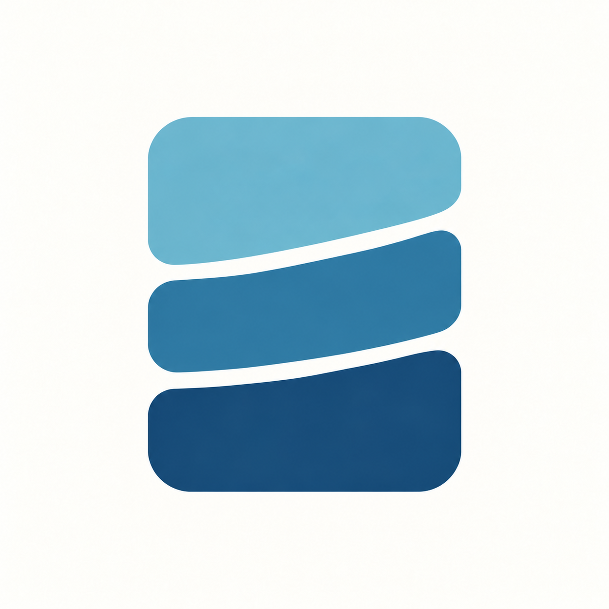
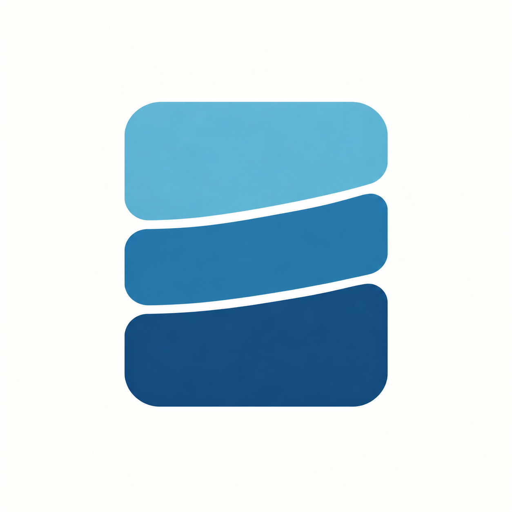
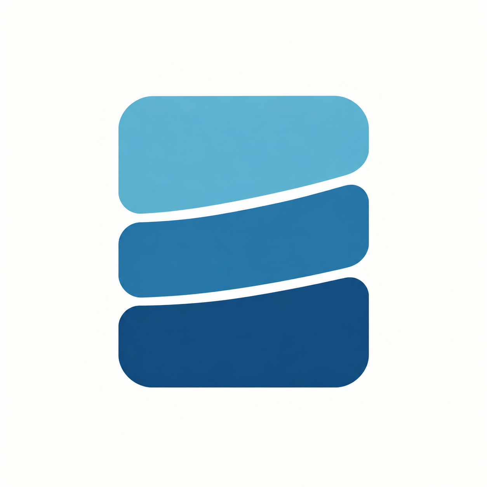

<!doctype html><html lang="zh-CN"><meta charset="utf-8"><meta name="viewport" content="width=device-width,initial-scale=1"><title>存片 · 间隙回调</title>
<style>*{box-sizing:border-box}body{margin:0;background:#f2f3f0;color:#293f49;font-family:system-ui,"Microsoft YaHei",sans-serif}main{max-width:1120px;margin:auto;padding:36px 24px 50px}h1{font-size:26px;margin:0 0 10px}p{color:#6b7b82;font-size:14px;line-height:1.75;margin:0}.grid{display:grid;grid-template-columns:repeat(3,minmax(0,1fr));gap:18px;margin-top:28px}article{background:white;border:1px solid #e2e7e3;padding:18px}h2{font-size:17px;margin:0 0 14px}.hero{display:block;width:100%}.sizes{display:flex;gap:16px;align-items:flex-end;justify-content:center;background:#eef0ee;padding:14px 8px;margin-top:16px}.sizes div{display:flex;flex-direction:column;align-items:center;gap:8px;font-size:11px;color:#6a7c82}.sizes img{display:block;width:var(--size);height:var(--size)}.circle{clip-path:circle(50%)}.round{border-radius:23%}footer{margin-top:24px;font-size:12px;line-height:1.9;color:#697a82}a{color:inherit}@media(max-width:800px){.grid{grid-template-columns:1fr}article{max-width:420px;margin:auto;width:100%}}</style>
<main><h1>存片 · 间隙回调</h1><p>上一版收得过紧。本轮从 v3 重新轻收，目标是留下更明确的呼吸感，不重画主体方向。</p><section class="grid">
<article><h2>v3 · 原间隙</h2><a href="a-concept.png"></a><div class="sizes"><div><span>48px</span></div><div><span>64px 圆形</span></div><div><span>64px 圆角</span></div></div></article>
<article><h2>v4 · 上次过紧稿</h2><a href="b-concept.png"></a><div class="sizes"><div><span>48px</span></div><div><span>64px 圆形</span></div><div><span>64px 圆角</span></div></div></article>
<article><h2>v5 · 间隙回调</h2><a href="c-concept.png"></a><div class="sizes"><div><span>48px</span></div><div><span>64px 圆形</span></div><div><span>64px 圆角</span></div></div></article>
</section><footer>v4 仅作过程对照，不作为推荐稿。小图按48 / 64 CSS像素展示，建议浏览器100%缩放。<br>生成式编辑并非逐像素锁定；整图裁切也不能替代Android前景/背景/单色层和真机验收。<br>原稿保留，未替换App图标。<a href="comparison.png">对照板</a> · <a href="PROMPT.md">imagegen 编辑提示词</a> · <a href="REVIEW.md">复核记录</a></footer></main></html>
